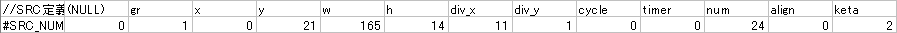
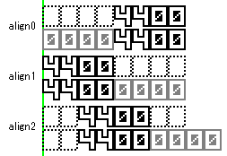
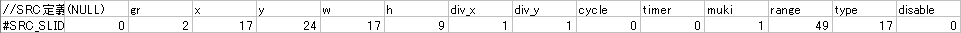
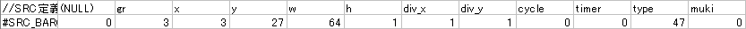
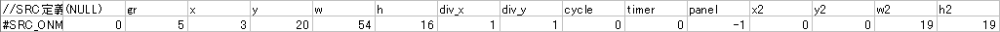
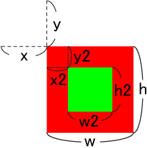
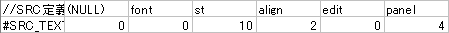

画像定義以外の定義です。数字や文字、グラフやボタンなど何らかの機能を持った定義になります。
画像定義同様何個でも使えます。
#SRC_NUMBER
数値定義です。スコアや日付などを参照します。

| （NULL） | #IMAGEと同じです。NUMBER定義では0以外を入力しても意味はありません。 |
|
|
| gr |
number.pngを使うのでここでは1。 |
||
| xywh |
IMAGEと同じですが、NUMBER定義では「使用する数字全体の座標」を指定します。
※csv側での文字間隔の指定は不可能なので必要に応じて画像制作段階でスペースを入れておきましょう。 |
||
| divx_ div_y |
SRC_NUMBERのdiv_xとdiv_yを掛けた値は以下のいずれかでなければなりません。 10の倍数：0〜9の文字セット
ここでいう「裏0」は表示桁数が指定桁数より少ない場合に桁を埋めるために使用する0を指します。
11分割で裏0を使用しないのであればそもそも10分割にした方が早いですが、
※裏0ありだとalignによっては正確な値が出せません。 ※「○の倍数」となっているのはdiv分割アニメーションが使用可能という意味です。
|
||
| cycle | div分割アニメーション数値定義の場合のみ入力します。0で省略。
IMAGE定義同様、アニメーション周期を指定します。 |
||
| timer |
div分割アニメーション（cycle値）の動作開始timerを指定します。利用可能なtimer値はスキン関連ドキュメント内timer.txt参照。 |
||
| num |
この数値定義で何の数値データを参照するのかを指定します。利用可能なnum値は右表参照。 ※当然ですが、間違うと大変です。 |
||
| align |
数値定義の配置指定です。 0：右寄せ
|
||
| keta |
表示する桁数を指定します。ketaが少ないときちんと表示されない場合があるので、
スキン関連ドキュメントには「ketaは+-文字を含めた桁数です」と記述されていますが、
つまり24分割NUMBER定義を使う場合、keta4の数値を表示するには5桁分の横幅が必要になります。 |
||
#DST_NUMBERのwh値で指定するのは数字1桁分のサイズで、DST_xy座標からalignとketaに従って数値が表示されます。
NUMBER定義のalignとDST_xy座標
keta8のNUMBER定義のalign0〜2をそれぞれ裏0無しと有りで全て同じDST_x座標に並べた時の表示は以下の様になります。
※緑の実線がDST_x座標、黒の破線は座標確認用補助線

NUMBER定義のDST座標は、まず先にDST_w値をketa数倍にして定義全体のw値が割り出され、そこから有効桁数でalign調整され、最後に裏0.が付加されます。
この時、align1・2では裏0が何故か値の右側に表示されるため、効果が無いばかりか値がおかしくなります。
また、24分割時のみ符号分も含めて幅を取るので、算出される座標は(keta値+1)×DST_w値になります。
他の定義と特性がちょっと違うので注意。
- 関連リンク：
- 特定条件下でのみ参照値が異なる機能
- NUMBER定義のalign2（中央寄せ）特有の注意点
- NUMBER定義のketaとalignの組み合わせによる特殊参照
- NUMBER定義を用いたバーグラフ
- 既フルコン時のMAXCOMBO差分検出によるフルコン分岐
NUMBER定義テンプレート
カンマ区切り
タブ区切り
#SRC_SLIDER
パラメータ変更用のスライダーです。クリックで摘むことにより、値を自由に変更できます。

| （NULL） | #IMAGEと同じです。SLIDER定義では0以外を入力しても意味はありません。 | |
| gr |
slider.pngを使うのでここでは2。 |
|
| xywh |
実際にスライダーとして動くパーツを選択します。スライダーの枠ではないのでちょっと注意。 |
|
| divx_ div_y |
IMAGE定義同様、アニメーションさせる場合のみ指定します。省略する場合はどちらも1。 |
|
| cycle | div分割アニメーション定義の場合のみ入力します。0で省略。
IMAGE定義同様、アニメーション周期を指定します。 |
|
| timer |
div分割アニメーション（cycle値）の動作開始timerを指定します。利用可能なtimer値はスキン関連ドキュメント内timer.txt参照。 |
|
| muki |
スライダーの移動方向を指定します。 0：上
※時間で変化する場合はスタート地点からどちらに進むか、値を変化させる場合は最小値から最大値までの向きです。 |
|
| range |
スライダーの移動範囲を指定します。
※書いてて気付きましたが音量調整って0〜100までの「101段階」なんですね…綺麗に動かない訳だ… |
|
| type |
スライダーの種別を指定します。利用可能な値は右表参照。 |
|
| disable |
マウスでの値の変更の可否を指定します。 0：変更可
※値が変更可能なものに限ります。
|
#DST_SLIDERのxy座標はスタート地点もしくは最小値の時の座標を指定します。
DST_whは拡縮を行わないのであればSRCと同じ値を指定します。（スライダーの移動幅はSRC側で定義するのでDST側では不要）
他は#DST_IMAGE同様。
SLIDER定義テンプレート
カンマ区切り
タブ区切り
#SRC_BARGRAPH
棒グラフ描画用です。スコア関連の視覚化に利用してください。

| （NULL） | #IMAGEと同じです。BARGRAPH定義では0以外を入力しても意味はありません。 |
|
| gr |
bargraph.pngを使うのでここでは3。 |
|
| xywh |
グラフが100%のときの画像を指定します。
|
|
| divx_ div_y |
IMAGE定義同様、アニメーションさせる場合のみ指定します。省略する場合はどちらも1。 |
|
| cycle | div分割アニメーション定義の場合のみ入力します。0で省略。
IMAGE定義同様、アニメーション周期を指定します。 |
|
| timer |
div分割アニメーション（cycle値）の動作開始timerを指定します。利用可能なtimer値はスキン関連ドキュメント内timer.txt参照。 |
|
| type |
グラフ種別を指定します。利用可能な値は右表参照。 |
|
| muki |
グラフの伸びていく向きを指定します。 0：右
※スライダーのmukiと違い、方向が限定されています。向きを逆にしたい場合はDSTのwやhを負の値にします。
|
#DST_BARGRAPHは省略。xywhはSRC同様100%状態の座標を指定します。wとhの値だけ注意しましょう。
- 関連リンク：
- 特定条件下でのみ参照値が異なる機能
BARGRAPH定義テンプレート
カンマ区切り
タブ区切り
#SRC_BUTTON
クリックすることにより、オプションの値等を変更することができ、また値によってボタンの画像を変えることが出来ます。
クリックを無効にすることにより、現在のオプション状態のみを表示、という使い方も可能です。
回転描画をさせてもクリック判定は回転していない状態となります。
※『現在のゲージ種別（HARDやEASY）』の値に応じて画像を切り替えられるのはボタン定義だけです。

| （NULL） | #IMAGEと同じです。BUTTON定義では0以外を入力しても意味はありません。 |
|
| gr |
button.pngを使うのでここでは4。 |
|
| xywh |
NUMBER定義同様、必要な全ボタン画像を指定し、div値で分割します。
|
|
| divx_ div_y |
ボタンタイプによって個数が決まっていますが、分割方向に指定はありません。
|
|
| cycle |
BUTTON定義では規定数の整数倍に分割してもdiv分割アニメーションを利用することが出来ません。
※通常はONMOUSE定義を使います。
|
|
| timer |
上記理由によりtimerも0固定になります。 |
|
| type |
ボタンタイプを指定します。利用可能な値は右表参照。 |
|
| click |
ボタンクリックによる値の変更の可否を指定します。 0：変更不可
※右半分クリックで値+、左半分クリックで値-です。 |
|
| panel | panelを指定すると、規定のパネルが出ているときのみクリック可能になります。
またpanel=-1の場合のみ、パネルがすべてオフのときのみクリック可能になります。 |
|
| plusonly |
何故か仕様書には記載されていませんが、plusonly=1で値+のみ、plusonly=-1で値-のみの動作になります。
※省略可能。 |
#DSTは省略。
BUTTON定義テンプレート
カンマ区切り
タブ区切り
#SRC_ONMOUSE
汎用定義で唯一、デフォスキンや仕様書に解説が存在しない定義です。
定義名からも分かる通り、マウスカーソルが重なった場合にのみパーツを表示します。

| （NULL） | #IMAGEと同じです。ONMOUSE定義では0以外を入力しても意味はありません。 | |
| gr |
onmouse.pngを使うのでここでは5。 |
|
| xywh |
#IMAGEと同様。表示する画像パーツを指定します。 |
|
| divx_ div_y |
IMAGE定義同様、アニメーションさせる場合のみ指定します。省略する場合はどちらも1。 |
|
| cycle |
div分割アニメーション定義の場合のみ入力します。0で省略。
|
|
| timer |
div分割アニメーション（cycle値）の動作開始timerを指定します。利用可能なtimer値はスキン関連ドキュメント内timer.txt参照。 |
|
| panel |
panelを指定すると、規定のパネルが出ているときのみ表示されます。
|
|
| x2y2w2h2 |
問題はここです。
右図は赤の範囲をSRCで切り出す画像全体、
この時の判定座標は切り出し画像内に無くても問題ありません。
表示するパーツがマウス判定座標と同じ位置・サイズであれば、
x2y2に緑範囲の左上座標点も含めて取ってしまいよく失敗しましたが、
|
 |
#DSTは省略。
ONMOUSE定義テンプレート
カンマ区切り
タブ区切り
#SRC_TEXT
文字列定義です。
LR2スキン定義の中で唯一製作側の想定しないものを表示する可能性がある定義です。
表示文字列の横幅がDSTのw値を超えるサイズになった場合は自動的に縮小されます。このためほぼfilter必須。
また、回転描画には対応していません。

| （NULL） | #IMAGEと同じです。TEXT定義では0以外を入力しても意味はありません。 |
|
| font |
画像定義でのgrと同じです。#LR2FONTでの記述順番号を指定します。 |
|
| st |
参照文字列タイプを指定します。利用可能な値は右表参照。 |
|
| align |
文字の表示位置を指定します。alignによってDST行で指定するx座標の位置が変わるので注意。 0：左寄せ（xは文字列の左端を指定）
※NUMBER定義のalignとは微妙に違うので注意。 |
|
| edit |
edit=1でクリック時の編集が可能になります。ただし対応しているもの以外は編集しても無意味です。 |
|
| panel | 指定のパネル起動中のみ編集できます。panel=-1でパネルが起動していないときのみ編集できます。 |
表示文字列のサイズはDST側のh値に依存します。
※文字の描画順序
DST_TEXTの文字の描画は左の文字から順に行われるようで、
lr2fontでの#Mを負の値で大きめに設定し、表示文字列が全て重なる状態で文字列「1234」を表示させると4が最前面になります。
※文字の表示サイズ
lr2fontファイル内で#SRC定義のように文字単位での切り出し座標が記述されており、
切り出された画像の高さが同じくlr2font内の#S値に合わせて拡縮され、更にDST_TEXTでのh値に拡縮されて表示されます。
（基本的に高さ基準です。横幅は最終的にDST側のw値依存になるので拡縮を完全に避けることは出来ません）
このため、lr2fontでの全文字のh値・S値・DST_TEXTのh値はすべて統一しておいた方が表示が綺麗になります。
が、
FontUtilで狙ったサイズを出力するのは難しいので、基本的にはlr2fontを作ってから文字定義を作りましょう。
TEXT定義テンプレート
カンマ区切り
タブ区切り